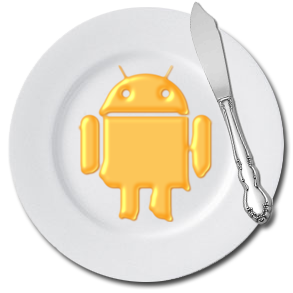

최근 모험 확인
당신의 최근 모험을 메인 화면에서 손쉽게 확인하세요
아름다운 KenBernsView를 통해서요.
당신은 가고 싶은 여행지를 선택하기만 하세요.
ADVENTOUR는 당신의 모험을 기록해주고 이를 더욱 빛나게 해 줍니다.
당신의 최근 모험을 메인 화면에서 손쉽게 확인하세요
아름다운 KenBernsView를 통해서요.
당신의 프로필을 확인하고 수정하세요.
당신의 모험기를 확인하고 타인과 공유하세요.
당신 주변의 여행지를 확인하고 모험을 떠나세요.
물론 주변이 아니더라도 어느 곳이던 정보를 확인할 수 있습니다.
다른 모험가들의 평가가 도움이 될 거에요.
먼저 다녀간 모험가가 있나요?
발로 뻥 차버리고 그 자리에 당신의 깃발을 꽃으세요.
KenBernsView에 펼쳐지는 여행지를 감상하며 전리품을 획득하세요.
획득한 업적은 언제든 다시 확인할 수 있답니다.
추가로 별점을 메기고 리뷰를 남겨보세요.
다른 모험가들에게 큰 도움이 될 겁니다.
관심이 가는 모험가의 프로필을 확인하세요.
마음에 든다면 친구로 삼아보도록 합시다.
이제껏 쌓아온 업적 점수로 친구들과 경쟁해보세요.
랭킹 1위를 놓쳐서는 안되겠죠?
식상한 여행지 추천은 이제 그만!
이제껏 수집해 온 스티커를 여행지 주변에 숨겨두고 친구에게 퀘스트를 내려보세요.
친구를 모험의 길로 인도해주세요.
지도에 표시된 보물의 위치를 찾아다니며 레이더를 돌려보세요.
운이 좋다면 친구가 숨겨둔 보물을 발견할 수 있을겁니다.
가볍게 끌어당기는 것 만으로도 스티커는 당신의 것입니다.


그 외에도 Google map API, Google place API, Google Login & firebase auth, 한국관광공사 API,
ted-permission, KenVernsView, parallaxpagertransformer, circleimageview, explosionfield
등의 오픈소스 라이브러리가 사용되었습니다.
자세한 구동 영상을 지금 확인하세요
{kind=link}
{kind=link}
{kind=link}